Table of Contents
5. Describing, Exploring, and Comparing Data
5.1. Central Tendency
5.1.1. Mean: The Average
5.1.2. The Average and the Histogram
5.1.3. The Root-Mean-Square
5.1.4. Which Average: Mean, Mode, or Median?
5.1.5. Averages of Qualitative and Ranked Data
5.2. Measures of Relative Standing
5.2.1. Measures of Relative Standing
5.2.2. Median
5.2.3. Mode
5.3. The Law of Averages
5.3.1. What Does the Law of Averages Say?
5.3.2. Chance Processes
5.3.3. The Sum of Draws
5.3.4. Making a Box Model
5.4. Further Considerations for Data
5.4.1. The Sample Average
5.4.2. Which Standard Deviation (SE)?
5.4.3. Estimating the Accuracy of an Average
5.4.4. Chance Models
5.4.5. The Gauss Model
5.4.6. Comparing Two Sample Averages
5.4.7. Odds Ratios
5.4.8. When Does the Z-Test Apply?
5. Describing, Exploring, and Comparing Data
5.1. Central Tendency
5.1.1. Mean: The Average
The term central tendency relates to the way in which quantitative data tend to cluster around some value.
Learning Objective
Define the average and distinguish between arithmetic, geometric, and harmonic means.
Key Points
- An average is a measure of the "middle" or "typical" value of a data set.
- The three most common averages are the Pythagorean means – the arithmetic mean, the geometric mean, and the harmonic mean.
- The arithmetic mean is the sum of a collection of numbers divided by the number of numbers in the collection.
- The geometric mean is a type of mean or average which indicates the central tendency, or typical value, of a set of numbers by using the product of their values. It is defined as the $n$ th root (where $n$ is the count of numbers) of the product of the numbers.
- The harmonic mean $H$ of the positive real numbers $x_1, x_2, \dots x_n$ is defined to be the reciprocal of the arithmetic mean of the reciprocals of $x_1, x_2, \dots x_n$ . It is typically appropriate for situations when the average of rates is desired.
Key Terms
- average
- any measure of central tendency, especially any mean, the median, or the mode
- arithmetic mean
- the measure of central tendency of a set of values computed by dividing the sum of the values by their number; commonly called the mean or the average
- central tendency
- a term that relates the way in which quantitative data tend to cluster around some value
Example
- The arithmetic mean, often simply called the mean, of two numbers, such as 2 and 8, is obtained by finding a value $A$ such that $2+8 = A + A$ . One may find that $A = \frac{2+8}{2} = 5$ . Switching the order of 2 and 8 to read 8 and 2 does not change the resulting value obtained for A. The mean 5 is not less than the minimum 2 nor greater than the maximum 8. If we increase the number of terms in the list for which we want an average, we get, for example, that the arithmetic mean of 2, 8, and 11 is found by solving for the value of $A$ in the equation $2+8+ 11 = A+A+A$ . One finds that $A= \frac{2+8+11}{3} = 7$ .
The term central tendency relates to the way in which quantitative data tend to cluster around some value. A measure of central tendency is any of a variety of ways of specifying this "central value". Central tendency is contrasted with statistical dispersion (spread), and together these are the most used properties of distributions. Statistics that measure central tendency can be used in descriptive statistics as a summary statistic for a data set, or as estimators of location parameters of a statistical model.
In the simplest cases, the measure of central tendency is an average of a set of measurements, the word average being variously construed as mean, median, or other measure of location, depending on the context. An average is a measure of the "middle" or "typical" value of a data set. In the most common case, the data set is a list of numbers. The average of a list of numbers is a single number intended to typify the numbers in the list. If all the numbers in the list are the same, then this number should be used. If the numbers are not the same, the average is calculated by combining the numbers from the list in a specific way and computing a single number as being the average of the list.
The term mean has three related meanings:
- The arithmetic mean of a sample,
- The expected value of a random variable, or
- The mean of a probability distribution
The Pythagorean Means
The three most common averages are the Pythagorean means – the arithmetic mean, the geometric mean, and the harmonic mean.
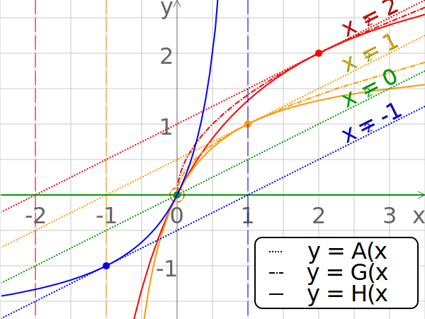{kind=link}
Comparison of the arithmetic, geometric and harmonic means of a pair of numbers. The vertical dashed lines are asymptotes for the harmonic means.
The Arithmetic Mean
When we think of means, or averages, we are typically thinking of the arithmetic mean. It is the sum of a collection of numbers divided by the number of numbers in the collection. The collection is often a set of results of an experiment, or a set of results from a survey of a subset of the public. In addition to mathematics and statistics, the arithmetic mean is used frequently in fields such as economics, sociology, and history, and it is used in almost every academic field to some extent. For example, per capita income is the arithmetic average income of a nation's population.
Suppose we have a data set containing the values $a_1, \dots, a_n$ . The arithmetic mean is defined via the expression:
If the data set is a statistical population (i.e., consists of every possible observation and not just a subset of them), then the mean of that population is called the population mean. If the data set is a statistical sample (a subset of the population) we call the statistic resulting from this calculation a sample mean. If it is required to use a single number as an estimate for the values of numbers, then the arithmetic mean does this best. This is because it minimizes the sum of squared deviations from the estimate.
The Geometric Mean
The geometric mean is a type of mean or average which indicates the central tendency, or typical value, of a set of numbers by using the product of their values (as opposed to the arithmetic mean which uses their sum). The geometric mean applies only to positive numbers. The geometric mean is defined as the $n$ th root (where $n$ is the count of numbers) of the product of the numbers.
For instance, the geometric mean of two numbers, say 2 and 8, is just the square root of their product; that is $\sqrt{2\cdot8} = 4$ . As another example, the geometric mean of the three numbers 4, 1, and 1/32 is the cube root of their product (1/8), which is 1/2; that is $\sqrt[3]{4\cdot 1 \cdot \frac{1}{32}} = \frac{1}{2}$ .
A geometric mean is often used when comparing different items – finding a single "figure of merit" for these items – when each item has multiple properties that have different numeric ranges. The use of a geometric mean "normalizes" the ranges being averaged, so that no range dominates the weighting, and a given percentage change in any of the properties has the same effect on the geometric mean.
For example, the geometric mean can give a meaningful "average" to compare two companies which are each rated at 0 to 5 for their environmental sustainability, and are rated at 0 to 100 for their financial viability. If an arithmetic mean was used instead of a geometric mean, the financial viability is given more weight because its numeric range is larger - so a small percentage change in the financial rating (e.g. going from 80 to 90) makes a much larger difference in the arithmetic mean than a large percentage change in environmental sustainability (e.g. going from 2 to 5).
The Harmonic Mean
The harmonic mean is typically appropriate for situations when the average of rates is desired. It may (compared to the arithmetic mean) mitigate the influence of large outliers and increase the influence of small values.
The harmonic mean $H$ of the positive real numbers $x_1, x_2, \dots, x_n$ is defined to be the reciprocal of the arithmetic mean of the reciprocals of $x_1, x_2, \dots, x_n$ . For example, the harmonic mean of 1, 2, and 4 is:
The harmonic mean is the preferable method for averaging multiples, such as the price/earning ratio in Finance, in which price is in the numerator. If these ratios are averaged using an arithmetic mean (a common error), high data points are given greater weights than low data points. The harmonic mean, on the other hand, gives equal weight to each data point.
5.1.2. The Average and the Histogram
The shape of a histogram can assist with identifying other descriptive statistics, such as which measure of central tendency is appropriate to use.
Learning Objective
Demonstrate the effect that the shape of a distribution has on measures of central tendency.
Key Points
- Histograms tend to form shapes, which when measured can describe the distribution of data within a dataset.
- A key feature of the normal distribution is that the mode, median and mean are the same and are together in the center of the curve.
- A key feature of the skewed distribution is that the mean and median have different values and do not all lie at the center of the curve.
- Skewed distributions with two or more modes are known as bi-modal or multimodal, respectively.
Key Terms
- normal distribution
- A family of continuous probability distributions such that the probability density function is the normal (or Gaussian) function.
- bell curve
- In mathematics, the bell-shaped curve that is typical of the normal distribution.
- histogram
- A representation of tabulated frequencies, shown as adjacent rectangles, erected over discrete intervals (bins), with an area equal to the frequency of the observations in the interval.
As discussed, a histogram is a bar graph displaying tabulated frequencies. Histograms tend to form shapes, which when measured can describe the distribution of data within a dataset. The shape of the distribution can assist with identifying other descriptive statistics, such as which measure of central tendency is appropriate to use.
The distribution of data item values may be symmetrical or asymmetrical. Two common examples of symmetry and asymmetry are the "normal distribution" and the "skewed distribution. "
Central Tendency and Normal Distributions
In a symmetrical distribution the two sides of the distribution are a mirror image of each other. A normal distribution is a true symmetric distribution of data item values. When a histogram is constructed on values that are normally distributed, the shape of columns form a symmetrical bell shape. This is why this distribution is also known as a "normal curve" or "bell curve. " is an example of a normal distribution:
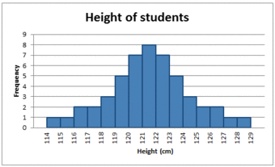{kind=link}
A histogram showing a normal distribution, or bell curve.
If represented as a 'normal curve' (or bell curve) the graph would take the following shape (where $\mu$ is the mean and $\sigma$ is the standard deviation):

The shape of a normally distributed histogram.
A key feature of the normal distribution is that the mode, median and mean are the same and are together in the center of the curve.
Also, there can only be one mode (i.e. there is only one value which is most frequently observed). Moreover, most of the data are clustered around the center, while the more extreme values on either side of the center become less rare as the distance from the center increases (i.e. about 68% of values lie within one standard deviation ($\sigma$ ) away from the mean; about 95% of the values lie within two standard deviations; and about 99.7% are within three standard deviations. This is known as the empirical rule or the 3-sigma rule).
Central Tendency and Skewed Distributions
In an asymmetrical distribution the two sides will not be mirror images of each other. Skewness is the tendency for the values to be more frequent around the high or low ends of the $x$ -axis. When a histogram is constructed for skewed data it is possible to identify skewness by looking at the shape of the distribution. For example, a distribution is said to be positively skewed when the tail on the right side of the histogram is longer than the left side. Most of the values tend to cluster toward the left side of the $x$ -axis (i.e, the smaller values) with increasingly fewer values at the right side of the $x$ -axis (i.e. the larger values).
A distribution is said to be negatively skewed when the tail on the left side of the histogram is longer than the right side. Most of the values tend to cluster toward the right side of the $x$ -axis (i.e. the larger values), with increasingly less values on the left side of the $x$ -axis (i.e. the smaller values).
A key feature of the skewed distribution is that the mean and median have different values and do not all lie at the center of the curve.
There can also be more than one mode in a skewed distribution. Distributions with two or more modes are known as bi-modal or multimodal, respectively. The distribution shape of the data in is bi-modal because there are two modes (two values that occur more frequently than any other) for the data item (variable).
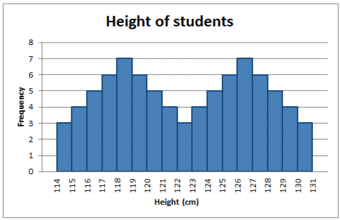{kind=link}
Some skewed distributions have two or more modes.
5.1.3. The Root-Mean-Square
The root-mean-square, also known as the quadratic mean, is a statistical measure of the magnitude of a varying quantity, or set of numbers.
Learning Objective
Compute the root-mean-square and express its usefulness.
Key Points
- The root-mean-square is especially useful when a data set includes both positive and negative numbers.
- Its name comes from its definition as the square root of the mean of the squares of the values.
- The process of computing the root mean square is to: 1) Square all of the values 2) Compute the average of the squares 3) Take the square root of the average.
- The root-mean-square is always greater than or equal to the average of the unsigned values.
Key Term
- root mean square
- the square root of the arithmetic mean of the squares
The root-mean-square, also known as the quadratic mean, is a statistical measure of the magnitude of a varying quantity, or set of numbers. It can be calculated for a series of discrete values or for a continuously varying function. Its name comes from its definition as the square root of the mean of the squares of the values.
This measure is especially useful when a data set includes both positive and negative numbers. For example, consider the set of numbers $[-2, 5, -8, 9, -4]$ . Computing the average of this set of numbers wouldn't tell us much because the negative numbers cancel out the positive numbers, resulting in an average of zero. This gives us the "middle value" but not a sense of the average magnitude.
One possible method of assigning an average to this set would be to simply erase all of the negative signs. This would lead us to compute an average of 5.6. However, using the RMS method, we would square every number (making them all positive) and take the square root of the average. Explicitly, the process is to:
- Square all of the values
- Compute the average of the squares
- Take the square root of the average
In our example:
- $(-2)^2+5^2 +(-8)^2 + 9^2+(-4)^2$
- $\displaystyle \frac{4+25+64+81+16}{5} = 38$
- $\sqrt{38} \approx 6.16$
The root-mean-square is always greater than or equal to the average of the unsigned values. Physical scientists often use the term "root-mean-square" as a synonym for standard deviation when referring to the square root of the mean squared deviation of a signal from a given baseline or fit. This is useful for electrical engineers in calculating the "AC only" RMS of an electrical signal. Standard deviation being the root-mean-square of a signal's variation about the mean, rather than about 0, the DC component is removed (i.e. the RMS of the signal is the same as the standard deviation of the signal if the mean signal is zero).
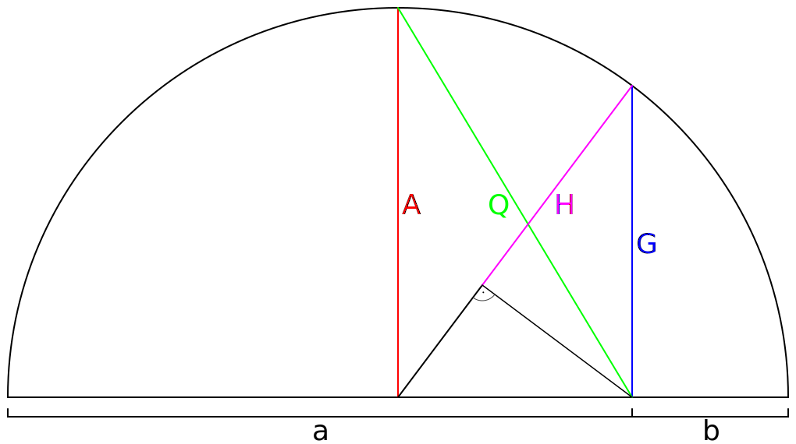{kind=link}
This is a geometrical representation of common mathematical means. $a$ , $b$ are scalars. $A$ is the arithmetic mean of scalars $a$ and $b$ . $G$ is the geometric mean, $H$ is the harmonic mean, $Q$ is the quadratic mean (also known as root-mean-square).
5.1.4. Which Average: Mean, Mode, or Median?
Depending on the characteristic distribution of a data set, the mean, median or mode may be the more appropriate metric for understanding.
Learning Objective
Assess various situations and determine whether the mean, median, or mode would be the appropriate measure of central tendency.
Key Points
- In symmetrical, unimodal distributions, such as the normal distribution (the distribution whose density function, when graphed, gives the famous "bell curve"), the mean (if defined), median and mode all coincide.
- If elements in a sample data set increase arithmetically, when placed in some order, then the median and arithmetic mean are equal. For example, consider the data sample $\{1, 2, 3, 4\}$ . The mean is 2.5, as is the median.
- While the arithmetic mean is often used to report central tendencies, it is not a robust statistic, meaning that it is greatly influenced by outliers (values that are very much larger or smaller than most of the values).
- The median is of central importance in robust statistics, as it is the most resistant statistic, having a breakdown point of 50%: so long as no more than half the data is contaminated, the median will not give an arbitrarily large result.
- Unlike mean and median, the concept of mode also makes sense for "nominal data" (i.e., not consisting of numerical values in the case of mean, or even of ordered values in the case of median).
Key Terms
- Mode
- the most frequently occurring value in a distribution
- breakdown point
- the number or proportion of arbitrarily large or small extreme values that must be introduced into a batch or sample to cause the estimator to yield an arbitrarily large result
- median
- the numerical value separating the higher half of a data sample, a population, or a probability distribution, from the lower half
Example
- The mode is the value that appears most often in a set of data. For example, the mode of the sample $[1, 3, 6, 6, 6, 6, 7, 7, 12, 12, 17]$ is 6. The median of a finite list of numbers can be found by arranging all the observations from lowest value to highest value and picking the middle one (e.g., the median of $\{3, 5, 9, \}$ is 5).
The Mode
The mode is the value that appears most often in a set of data. For example, the mode of the sample $[1, 3, 6, 6, 6, 6, 7, 7, 12, 12, 17]$ is 6. Like the statistical mean and median, the mode is a way of expressing, in a single number, important information about a random variable or a population.
The mode is not necessarily unique, since the same maximum frequency may be attained at different values. Given the list of data $[1, 1, 2, 4, 4]$ the mode is not unique - the dataset may be said to be bimodal, while a set with more than two modes may be described as multimodal. The most extreme case occurs in uniform distributions, where all values occur equally frequently.
For a sample from a continuous distribution, the concept is unusable in its raw form. No two values will be exactly the same, so each value will occur precisely once. In order to estimate the mode, the usual practice is to discretize the data by assigning frequency values to intervals of equal distance, as with making a histogram, effectively replacing the values with the midpoints of the intervals they are assigned to. The mode is then the value where the histogram reaches its peak.
The Median
The median is the numerical value separating the higher half of a data sample, a population, or a probability distribution, from the lower half. The median of a finite list of numbers can be found by arranging all the observations from lowest value to highest value and picking the middle one (e.g., the median of $\{3,5, 9\}$ is 5). If there is an even number of observations, then there is no single middle value. In this case, the median is usually defined to be the mean of the two middle values.
The median can be used as a measure of location when a distribution is skewed, when end-values are not known, or when one requires reduced importance to be attached to outliers (e.g., because there may be measurement errors).
Which to Use?
In symmetrical, unimodal distributions, such as the normal distribution (the distribution whose density function, when graphed, gives the famous "bell curve"), the mean (if defined), median and mode all coincide. For samples, if it is known that they are drawn from a symmetric distribution, the sample mean can be used as an estimate of the population mode.
If elements in a sample data set increase arithmetically, when placed in some order, then the median and arithmetic mean are equal. For example, consider the data sample $\{1,2,3,4\}$ . The mean is 2.5, as is the median. However, when we consider a sample that cannot be arranged so as to increase arithmetically, such as $\{1,2,4,8,16\}$ , the median and arithmetic mean can differ significantly. In this case, the arithmetic mean is 6.2 and the median is 4. In general the average value can vary significantly from most values in the sample, and can be larger or smaller than most of them.
While the arithmetic mean is often used to report central tendencies, it is not a robust statistic, meaning that it is greatly influenced by outliers (values that are very much larger or smaller than most of the values). Notably, for skewed distributions, such as the distribution of income for which a few people's incomes are substantially greater than most people's, the arithmetic mean may not be consistent with one's notion of "middle," and robust statistics such as the median may be a better description of central tendency.
The median is of central importance in robust statistics, as it is the most resistant statistic, having a breakdown point of 50%: so long as no more than half the data is contaminated, the median will not give an arbitrarily large result. Robust statistics are statistics with good performance for data drawn from a wide range of probability distributions, especially for distributions that are not normally distributed. One motivation is to produce statistical methods that are not unduly affected by outliers. Another motivation is to provide methods with good performance when there are small departures from parametric distributions.
Unlike median, the concept of mean makes sense for any random variable assuming values from a vector space. For example, a distribution of points in the plane will typically have a mean and a mode, but the concept of median does not apply.
{kind=link}
Unlike mean and median, the concept of mode also makes sense for "nominal data" (i.e., not consisting of numerical values in the case of mean, or even of ordered values in the case of median). For example, taking a sample of Korean family names, one might find that "Kim" occurs more often than any other name. Then "Kim" would be the mode of the sample. In any voting system where a plurality determines victory, a single modal value determines the victor, while a multi-modal outcome would require some tie-breaking procedure to take place.
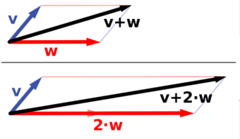{kind=link}
Vector addition and scalar multiplication: a vector $v$ (blue) is added to another vector $w$ (red, upper illustration). Below, $w$ is stretched by a factor of 2, yielding the sum $v+2w$ .

Comparison of mean, median and mode of two log-normal distributions with different skewness.
5.1.5. Averages of Qualitative and Ranked Data
The central tendency for qualitative data can be described via the median or the mode, but not the mean.
Learning Objective
Categorize levels of measurement and identify the appropriate measures of central tendency.
Key Points
- Qualitative data can be defined as either nominal or ordinal.
- The nominal scale differentiates between items or subjects based only on their names and/or categories and other qualitative classifications they belong to.
- The mode is allowed as the measure of central tendency for nominal data.
- The ordinal scale allows for rank order by which data can be sorted, but still does not allow for relative degree of difference between them. The median and the mode are allowed as the measure of central tendency; however, the mean as the measure of central tendency is not allowed.
- The median and the mode are allowed as the measure of central tendency for ordinal data; however, the mean as the measure of central tendency is not allowed.
Key Terms
- quantitative
- of a measurement based on some quantity or number rather than on some quality
- qualitative
- of descriptions or distinctions based on some quality rather than on some quantity
- dichotomous
- dividing or branching into two pieces
Levels of Measurement
In order to address the process for finding averages of qualitative data, we must first introduce the concept of levels of measurement. In statistics, levels of measurement, or scales of measure, are types of data that arise in the theory of scale types developed by the psychologist Stanley Smith Stevens. Stevens proposed his typology in a 1946 Science article entitled "On the Theory of Scales of Measurement. " In that article, Stevens claimed that all measurement in science was conducted using four different types of scales that he called "nominal", "ordinal", "interval" and "ratio", unifying both qualitative (which are described by his "nominal" type) and quantitative (to a different degree, all the rest of his scales).
Nominal Scale
The nominal scale differentiates between items or subjects based only on their names and/or categories and other qualitative classifications they belong to. Examples include gender, nationality, ethnicity, language, genre, style, biological species, visual pattern, and form.
The mode, i.e. the most common item, is allowed as the measure of central tendency for the nominal type. On the other hand, the median, i.e. the middle-ranked item, makes no sense for the nominal type of data since ranking is not allowed for the nominal type.
Ordinal Scale
The ordinal scale allows for rank order (1st, 2nd, 3rd, et cetera) by which data can be sorted, but still does not allow for relative degree of difference between them. Examples include, on one hand, dichotomous data with dichotomous (or dichotomized) values such as "sick" versus "healthy" when measuring health, "guilty" versus "innocent" when making judgments in courts, or "wrong/false" versus "right/true" when measuring truth value. On the other hand, non-dichotomous data consisting of a spectrum of values is also included, such as "completely agree," "mostly agree," "mostly disagree," and "completely disagree" when measuring opinion .
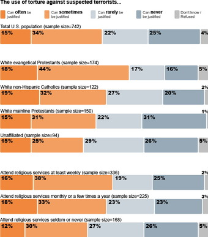{kind=link}
An opinion survey on religiosity and torture. An opinion survey is an example of a non-dichotomous data set on the ordinal scale for which the central tendency can be described by the median or the mode.
The median, i.e. middle-ranked, item is allowed as the measure of central tendency; however, the mean (or average) as the measure of central tendency is not allowed. The mode is also allowed.
In 1946, Stevens observed that psychological measurement, such as measurement of opinions, usually operates on ordinal scales; thus means and standard deviations have no validity, but they can be used to get ideas for how to improve operationalization of variables used in questionnaires.
5.2. Measures of Relative Standing
5.2.1. Measures of Relative Standing
Measures of relative standing can be used to compare values from different data sets, or to compare values within the same data set.
Learning Objective
Outline how percentiles and quartiles measure relative standing within a data set.
Key Points
- The common measures of relative standing or location are quartiles and percentiles.
- A percentile is a measure used in statistics indicating the value below which a given percentage of observations in a group of observations fall.
- The 25th percentile is also known as the first quartile (Q1), the 50th percentile as the median or second quartile (Q2), and the 75th percentile as the third quartile (Q3).
- To calculate quartiles and percentiles, the data must be ordered from smallest to largest.
- For very large populations following a normal distribution, percentiles may often be represented by reference to a normal curve plot.
- Percentiles represent the area under the normal curve, increasing from left to right.
Key Terms
- percentile
- any of the ninety-nine points that divide an ordered distribution into one hundred parts, each containing one per cent of the population
- quartile
- any of the three points that divide an ordered distribution into four parts, each containing a quarter of the population
Example
- a. For runners in a race, a low time means a faster run. The winners in a race have the shortest running times. Is it more desirable to have a finish time with a high or a low percentile when running a race? b. The 20th percentile of run times in a particular race is 5.2 minutes. Write a sentence interpreting the 20th percentile in the context of the situation. c. A bicyclist in the 90th percentile of a bicycle race between two towns completed the race in 1 hour and 12 minutes. Is he among the fastest or slowest cyclists in the race? Write a sentence interpreting the 90th percentile in the context of the situation. SOLUTION a. For runners in a race it is more desirable to have a low percentile for finish time. A low percentile means a short time, which is faster. b. INTERPRETATION: 20% of runners finished the race in 5.2 minutes or less. 80% of runners finished the race in 5.2 minutes or longer. c. He is among the slowest cyclists (90% of cyclists were faster than him. ) INTERPRETATION: 90% of cyclists had a finish time of 1 hour, 12 minutes or less.Only 10% of cyclists had a finish time of 1 hour, 12 minutes or longer.
Measures of relative standing, in the statistical sense, can be defined as measures that can be used to compare values from different data sets, or to compare values within the same data set.
Quartiles and Percentiles
The common measures of relative standing or location are quartiles and percentiles. A percentile is a measure used in statistics indicating the value below which a given percentage of observations in a group of observations fall. For example, the 20th percentile is the value (or score) below which 20 percent of the observations may be found. The term percentile and the related term, percentile rank, are often used in the reporting of scores from norm-referenced tests. For example, if a score is in the 86th percentile, it is higher than 86% of the other scores. The 25th percentile is also known as the first quartile (Q1), the 50th percentile as the median or second quartile (Q2), and the 75th percentile as the third quartile (Q3).
To calculate quartiles and percentiles, the data must be ordered from smallest to largest. Recall that quartiles divide ordered data into quarters. Percentiles divide ordered data into hundredths. To score in the 90th percentile of an exam does not mean, necessarily, that you received 90% on a test. It means that 90% of test scores are the same or less than your score and 10% of the test scores are the same or greater than your test score.
Percentiles are useful for comparing values. For this reason, universities and colleges use percentiles extensively. Percentiles are mostly used with very large populations. Therefore, if you were to say that 90% of the test scores are less (and not the same or less) than your score, it would be acceptable because removing one particular data value is not significant.
For very large populations following a normal distribution, percentiles may often be represented by reference to a normal curve plot. The normal distribution is plotted along an axis scaled to standard deviations, or sigma units. Percentiles represent the area under the normal curve, increasing from left to right. Each standard deviation represents a fixed percentile. Thus, rounding to two decimal places, $-3$ is the 0.13th percentile, $-2$ the 2.28th percentile, $-1$ the 15.87th percentile, 0 the 50th percentile (both the mean and median of the distribution), $+1$ the 84.13th percentile, $+2$ the 97.72nd percentile, and $+3$ the 99.87th percentile. This is known as the 68–95–99.7 rule or the three-sigma rule.

Representation of the 68–95–99.7 rule. The dark blue zone represents observations within one standard deviation ($\sigma$ ) to either side of the mean ($\mu$ ), which accounts for about 68.2% of the population. Two standard deviations from the mean (dark and medium blue) account for about 95.4%, and three standard deviations (dark, medium, and light blue) for about 99.7%.
Note that in theory the 0th percentile falls at negative infinity and the 100th percentile at positive infinity; although, in many practical applications, such as test results, natural lower and/or upper limits are enforced.
Interpreting Percentiles, Quartiles, and Median
A percentile indicates the relative standing of a data value when data are sorted into numerical order, from smallest to largest. $p$ % of data values are less than or equal to the $p$th percentile. For example, 15% of data values are less than or equal to the 15th percentile. Low percentiles always correspond to lower data values. High percentiles always correspond to higher data values.
A percentile may or may not correspond to a value judgment about whether it is "good" or "bad". The interpretation of whether a certain percentile is good or bad depends on the context of the situation to which the data applies. In some situations, a low percentile would be considered "good'; in other contexts a high percentile might be considered "good". In many situations, there is no value judgment that applies.
Understanding how to properly interpret percentiles is important not only when describing data, but is also important when calculating probabilities.
Guideline:
When writing the interpretation of a percentile in the context of the given data, the sentence should contain the following information:
- information about the context of the situation being considered,
- the data value (value of the variable) that represents the percentile,
- the percent of individuals or items with data values below the percentile.
- Additionally, you may also choose to state the percent of individuals or items with data values above the percentile.
5.2.2. Median
The median is the middle value in distribution when the values are arranged in ascending or descending order.
Learning Objective
Identify the median in a data set and distinguish it's properties from other measures of central tendency.
Key Points
- The median divides the distribution in half (there are 50% of observations on either side of the median value). In a distribution with an odd number of observations, the median value is the middle value.
- When the distribution has an even number of observations, the median value is the mean of the two middle values.
- The median is less affected by outliers and skewed data than the mean, and is usually the preferred measure of central tendency when the distribution is not symmetrical.
- he median cannot be identified for categorical nominal data, as it cannot be logically ordered.
Key Terms
- outlier
- a value in a statistical sample which does not fit a pattern that describes most other data points; specifically, a value that lies 1.5 IQR beyond the upper or lower quartile
- median
- the numerical value separating the higher half of a data sample, a population, or a probability distribution, from the lower half
A measure of central tendency (also referred to as measures of center or central location) is a summary measure that attempts to describe a whole set of data with a single value that represents the middle or center of its distribution. There are three main measures of central tendency: the mode, the median and the mean . Each of these measures describes a different indication of the typical or central value in the distribution.
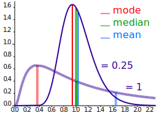{kind=link}
Comparison of mean, median and mode of two log-normal distributions with different skewness.
The median is the middle value in distribution when the values are arranged in ascending or descending order. The median divides the distribution in half (there are 50% of observations on either side of the median value). In a distribution with an odd number of observations, the median value is the middle value.
Looking at the retirement age distribution (which has 11 observations), the median is the middle value, which is 57 years:
54, 54, 54, 55, 56, 57, 57, 58, 58, 60, 60
When the distribution has an even number of observations, the median value is the mean of the two middle values. In the following distribution, the two middle values are 56 and 57, therefore the median equals 56.5 years:
52, 54, 54, 54, 55, 56, 57, 57, 58, 58, 60, 60
The median is less affected by outliers and skewed data than the mean, and is usually the preferred measure of central tendency when the distribution is not symmetrical. The median cannot be identified for categorical nominal data, as it cannot be logically ordered.
5.2.3. Mode
The mode is the most commonly occurring value in a distribution.
Learning Objective
Define the mode and explain its limitations.
Key Points
- There are some limitations to using the mode. In some distributions, the mode may not reflect the center of the distribution very well.
- It is possible for there to be more than one mode for the same distribution of data, (eg bi-modal). The presence of more than one mode can limit the ability of the mode in describing the center or typical value of the distribution because a single value to describe the center cannot be identified.
- In some cases, particularly where the data are continuous, the distribution may have no mode at all (i.e. if all values are different). In cases such as these, it may be better to consider using the median or mean, or group the data in to appropriate intervals, and find the modal class.
Key Term
- skewness
- A measure of the asymmetry of the probability distribution of a real-valued random variable; is the third standardized moment, defined as where is the third moment about the mean and is the standard deviation.
A measure of central tendency (also referred to as measures of center or central location) is a summary measure that attempts to describe a whole set of data with a single value that represents the middle or center of its distribution. There are three main measures of central tendency: the mode, the median and the mean . Each of these measures describes a different indication of the typical skewness in the distribution.

Comparison of mean, median and mode of two log-normal distributions with different skewness.
The mode is the most commonly occurring value in a distribution. Consider this dataset showing the retirement age of 11 people, in whole years:
54, 54, 54, 55, 56, 57, 57, 58, 58, 60, 60
The most commonly occurring value is 54, therefore the mode of this distribution is 54 years. The mode has an advantage over the median and the mean as it can be found for both numerical and categorical (non-numerical) data.
There are some limitations to using the mode. In some distributions, the mode may not reflect the center of the distribution very well. When the distribution of retirement age is ordered from lowest to highest value, it is easy to see that the center of the distribution is 57 years, but the mode is lower, at 54 years. It is also possible for there to be more than one mode for the same distribution of data, (bi-modal, or multi-modal). The presence of more than one mode can limit the ability of the mode in describing the center or typical value of the distribution because a single value to describe the center cannot be identified. In some cases, particularly where the data are continuous, the distribution may have no mode at all (i.e. if all values are different). In cases such as these, it may be better to consider using the median or mean, or group the data in to appropriate intervals, and find the modal class.
5.3. The Law of Averages
5.3.1. What Does the Law of Averages Say?
The law of averages is a lay term used to express a belief that outcomes of a random event will "even out" within a small sample.
Learning Objective
Evaluate the law of averages and distinguish it from the law of large numbers.
Key Points
- The law of averages typically assumes that unnatural short-term "balance" must occur. This can also be known as "Gambler's Fallacy" and is not a real mathematical principle.
- Some people mix up the law of averages with the law of large numbers, which is a real theorem that states that the average of the results obtained from a large number of trials should be close to the expected value, and will tend to become closer as more trials are performed.
- The law of large numbers is important because it "guarantees" stable long-term results for the averages of random events. It does not guarantee what will happen with a small number of events.
Key Term
- expected value
- of a discrete random variable, the sum of the probability of each possible outcome of the experiment multiplied by the value itself
The Law of Averages
The law of averages is a lay term used to express a belief that outcomes of a random event will "even out" within a small sample. As invoked in everyday life, the "law" usually reflects bad statistics or wishful thinking rather than any mathematical principle. While there is a real theorem that a random variable will reflect its underlying probability over a very large sample (the law of large numbers), the law of averages typically assumes that unnatural short-term "balance" must occur.
The law of averages is sometimes known as "Gambler's Fallacy. " It evokes the idea that an event is "due" to happen. For example, "The roulette wheel has landed on red in three consecutive spins. The law of averages says it's due to land on black! " Of course, the wheel has no memory and its probabilities do not change according to past results. So even if the wheel has landed on red in ten consecutive spins, the probability that the next spin will be black is still 48.6% (assuming a fair European wheel with only one green zero: it would be exactly 50% if there were no green zero and the wheel were fair, and 47.4% for a fair American wheel with one green "0" and one green "00"). (In fact, if the wheel has landed on red in ten consecutive spins, that is strong evidence that the wheel is not fair - that it is biased toward red. Thus, the wise course on the eleventh spin would be to bet on red, not on black: exactly the opposite of the layman's analysis.) Similarly, there is no statistical basis for the belief that lottery numbers which haven't appeared recently are due to appear soon.
The Law of Large Numbers
Some people interchange the law of averages with the law of large numbers, but they are different. The law of averages is not a mathematical principle, whereas the law of large numbers is. In probability theory, the law of large numbers is a theorem that describes the result of performing the same experiment a large number of times. According to the law, the average of the results obtained from a large number of trials should be close to the expected value, and will tend to become closer as more trials are performed.
The law of large numbers is important because it "guarantees" stable long-term results for the averages of random events. For example, while a casino may lose money in a single spin of the roulette wheel, its earnings will tend towards a predictable percentage over a large number of spins. Any winning streak by a player will eventually be overcome by the parameters of the game. It is important to remember that the law of large numbers only applies (as the name indicates) when a large number of observations are considered. There is no principle that a small number of observations will coincide with the expected value or that a streak of one value will immediately be "balanced" by the others.
Another good example comes from the expected value of rolling a six-sided die. A single roll produces one of the numbers 1, 2, 3, 4, 5, or 6, each with an equal probability ($\frac{1}{6}$ ) of occurring. The expected value of a roll is 3.5, which comes from the following equation:
According to the law of large numbers, if a large number of six-sided dice are rolled, the average of their values (sometimes called the sample mean) is likely to be close to 3.5, with the accuracy increasing as more dice are rolled . However, in a small number of rolls, just because ten 6's are rolled in a row, it doesn't mean a 1 is more likely the next roll. Each individual outcome still has a probability of $\frac{1}{6}$ .

This shows a graph illustrating the law of large numbers using a particular run of rolls of a single die. As the number of rolls in this run increases, the average of the values of all the results approaches 3.5. While different runs would show a different shape over a small number of throws (at the left), over a large number of rolls (to the right) they would be extremely similar.
5.3.2. Chance Processes
A stochastic process is a collection of random variables that is often used to represent the evolution of some random value over time.
Learning Objective
Summarize the stochastic process and state its relationship to random walks.
Key Points
- One approach to stochastic processes treats them as functions of one or several deterministic arguments (inputs, in most cases regarded as time) whose values (outputs) are random variables.
- Random variables are non-deterministic (single) quantities which have certain probability distributions.
- Although the random values of a stochastic process at different times may be independent random variables, in most commonly considered situations they exhibit complicated statistical correlations.
- The law of a stochastic process is the measure that the process induces on the collection of functions from the index set into the state space.
- A random walk is a mathematical formalization of a path that consists of a succession of random steps.
Key Terms
- random variable
- a quantity whose value is random and to which a probability distribution is assigned, such as the possible outcome of a roll of a die
- random walk
- a stochastic path consisting of a series of sequential movements, the direction (and sometime length) of which is chosen at random
- stochastic
- random; randomly determined
Example
- Familiar examples of processes modeled as stochastic time series include stock market and exchange rate fluctuations; signals such as speech, audio and video; medical data such as a patient's EKG, EEG, blood pressure or temperature; and random movement such as Brownian motion or random walks.
Chance = Stochastic
In probability theory, a stochastic process--sometimes called a random process-- is a collection of random variables that is often used to represent the evolution of some random value, or system, over time. It is the probabilistic counterpart to a deterministic process (or deterministic system). Instead of describing a process which can only evolve in one way (as in the case, for example, of solutions of an ordinary differential equation), in a stochastic or random process there is some indeterminacy. Even if the initial condition (or starting point) is known, there are several (often infinitely many) directions in which the process may evolve.
In the simple case of discrete time, a stochastic process amounts to a sequence of random variables known as a time series--for example, a Markov chain. Another basic type of a stochastic process is a random field, whose domain is a region of space. In other words, a stochastic process is a random function whose arguments are drawn from a range of continuously changing values.
One approach to stochastic processes treats them as functions of one or several deterministic arguments (inputs, in most cases regarded as time) whose values (outputs) are random variables. Random variables are non-deterministic (single) quantities which have certain probability distributions. Random variables corresponding to various times (or points, in the case of random fields) may be completely different. Although the random values of a stochastic process at different times may be independent random variables, in most commonly considered situations they exhibit complicated statistical correlations.
Familiar examples of processes modeled as stochastic time series include stock market and exchange rate fluctuations; signals such as speech, audio, and video; medical data such as a patient's EKG, EEG, blood pressure, or temperature; and random movement such as Brownian motion or random walks.
Law of a Stochastic Process
The law of a stochastic process is the measure that the process induces on the collection of functions from the index set into the state space. The law encodes a lot of information about the process. In the case of a random walk, for example, the law is the probability distribution of the possible trajectories of the walk.
A random walk is a mathematical formalization of a path that consists of a succession of random steps. For example, the path traced by a molecule as it travels in a liquid or a gas, the search path of a foraging animal, the price of a fluctuating stock, and the financial status of a gambler can all be modeled as random walks, although they may not be truly random in reality. Random walks explain the observed behaviors of processes in such fields as ecology, economics, psychology, computer science, physics, chemistry, biology and, of course, statistics. Thus, the random walk serves as a fundamental model for recorded stochastic activity.
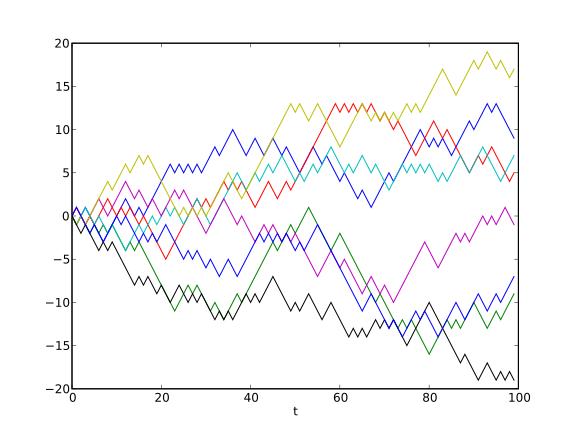{kind=link}
Example of eight random walks in one dimension starting at 0. The plot shows the current position on the line (vertical axis) versus the time steps (horizontal axis).
5.3.3. The Sum of Draws
The sum of draws is the process of drawing randomly, with replacement, from a set of data and adding up the results.
Learning Objective
Describe how chance variation affects sums of draws.
Key Points
- By drawing from a set of data with replacement, we are able to draw over and over again under the same conditions.
- The sum of draws is subject to a force known as chance variation.
- The sum of draws can be illustrated in practice through a game of Monopoly. A player rolls a pair of dice, adds the two numbers on the die, and moves his or her piece that many squares.
Key Term
- chance variation
- the presence of chance in determining the variation in experimental results
The sum of draws can be illustrated by the following process. Imagine there is a box of tickets, each having a number 1, 2, 3, 4, 5, or 6 written on it.
The sum of draws can be represented by a process in which tickets are drawn at random from the box, with the ticket being replaced to the box after each draw. Then, the numbers on these tickets are added up. By replacing the tickets after each draw, you are able to draw over and over under the same conditions.
Say you draw twice from the box at random with replacement. To find the sum of draws, you simply add the first number you drew to the second number you drew. For instance, if first you draw a 4 and second you draw a 6, your sum of draws would be $4+6=10$ . You could also first draw a 4 and then draw 4 again. In this case your sum of draws would be $4+4=8$ . Your sum of draws is, therefore, subject to a force known as chance variation.
This example can be seen in practical terms when imagining a turn of Monopoly. A player rolls a pair of dice, adds the two numbers on the die, and moves his or her piece that many squares. Rolling a die is the same as drawing a ticket from a box containing six options.
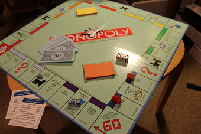{kind=link}
Rolling a die is the same as drawing a ticket from a box containing six options.
To better see the affects of chance variation, let us take 25 draws from the box. These draws result in the following values:
3 2 4 6 3 3 5 4 4 1 3 6 4 1 3 4 1 5 5 5 2 2 2 5 6
The sum of these 25 draws is 89. Obviously this sum would have been different had the draws been different.
5.3.4. Making a Box Model
A box plot (also called a box-and-whisker diagram) is a simple visual representation of key features of a univariate sample.
Learning Objective
Produce a box plot that is representative of a data set.
Key Points
- Our ultimate goal in statistics is not to summarize the data, it is to fully understand their complex relationships.
- A well designed statistical graphic helps us explore, and perhaps understand, these relationships.
- A common extension of the box model is the 'box-and-whisker' plot, which adds vertical lines extending from the top and bottom of the plot to, for example, the maximum and minimum values.
Key Terms
- regression
- An analytic method to measure the association of one or more independent variables with a dependent variable.
- box-and-whisker plot
- a convenient way of graphically depicting groups of numerical data through their quartiles
A single statistic tells only part of a dataset's story. The mean is one perspective; the median yet another. When we explore relationships between multiple variables, even more statistics arise, such as the coefficient estimates in a regression model or the Cochran-Maentel-Haenszel test statistic in partial contingency tables. A multitude of statistics are available to summarize and test data.
Our ultimate goal in statistics is not to summarize the data, it is to fully understand their complex relationships. A well designed statistical graphic helps us explore, and perhaps understand, these relationships. A box plot (also called a box and whisker diagram) is a simple visual representation of key features of a univariate sample.
The box lies on a vertical axis in the range of the sample. Typically, a top to the box is placed at the first quartile, the bottom at the third quartile. The width of the box is arbitrary, as there is no x-axis. In between the top and bottom of the box is some representation of central tendency. A common version is to place a horizontal line at the median, dividing the box into two. Additionally, a star or asterisk is placed at the mean value, centered in the box in the horizontal direction.
Another common extension of the box model is the 'box-and-whisker' plot , which adds vertical lines extending from the top and bottom of the plot to, for example, the maximum and minimum values. Alternatively, the whiskers could extend to the 2.5 and 97.5 percentiles. Finally, it is common in the box-and-whisker plot to show outliers (however defined) with asterisks at the individual values beyond the ends of the whiskers.
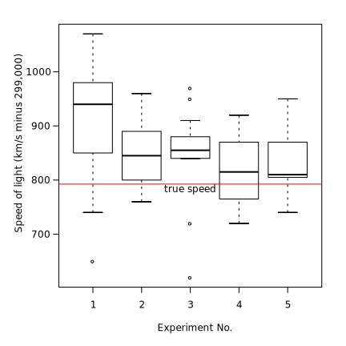{kind=link}
Box plot of data from the Michelson-Morley Experiment, which attempted to detect the relative motion of matter through the stationary luminiferous aether.

Box plot of data from the Michelson-Morley Experiment.
5.4. Further Considerations for Data
5.4.1. The Sample Average
The sample average/mean can be calculated taking the sum of every piece of data and dividing that sum by the total number of data points.
Learning Objective
Distinguish the sample mean from the population mean.
Key Points
- The sample mean makes a good estimator of the population mean, as its expected value is equal to the population mean. The law of large numbers dictates that the larger the size of the sample, the more likely it is that the sample mean will be close to the population mean.
- The sample mean of a population is a random variable, not a constant, and consequently it will have its own distribution.
- The mean is the arithmetic average of a set of values, or distribution; however, for skewed distributions, the mean is not necessarily the same as the middle value (median), or the most likely (mode).
Key Terms
- random variable
- a quantity whose value is random and to which a probability distribution is assigned, such as the possible outcome of a roll of a die
- finite
- limited, constrained by bounds, having an end
Sample Average vs. Population Average
The sample average (also called the sample mean) is often referred to as the arithmetic mean of a sample, or simply, $\bar{x}$ (pronounced "x bar"). The mean of a population is denoted $\mu$ , known as the population mean. The sample mean makes a good estimator of the population mean, as its expected value is equal to the population mean. The sample mean of a population is a random variable, not a constant, and consequently it will have its own distribution. For a random sample of $n$ observations from a normally distributed population, the sample mean distribution is:
For a finite population, the population mean of a property is equal to the arithmetic mean of the given property while considering every member of the population. For example, the population mean height is equal to the sum of the heights of every individual divided by the total number of individuals.The sample mean may differ from the population mean, especially for small samples. The law of large numbers dictates that the larger the size of the sample, the more likely it is that the sample mean will be close to the population mean.
Calculation of the Sample Mean
The arithmetic mean is the "standard" average, often simply called the "mean". It can be calculated taking the sum of every piece of data and dividing that sum by the total number of data points:
For example, the arithmetic mean of five values: 4, 36, 45, 50, 75 is:
The mean may often be confused with the median, mode or range. The mean is the arithmetic average of a set of values, or distribution; however, for skewed distributions, the mean is not necessarily the same as the middle value (median), or the most likely (mode). For example, mean income is skewed upwards by a small number of people with very large incomes, so that the majority have an income lower than the mean. By contrast, the median income is the level at which half the population is below and half is above. The mode income is the most likely income, and favors the larger number of people with lower incomes. The median or mode are often more intuitive measures of such data .
{kind=link}
This graph shows where the mean, median, and mode fall in two different distributions (one is slightly skewed left and one is highly skewed right).
5.4.2. Which Standard Deviation (SE)?
Although they are often used interchangeably, the standard deviation and the standard error are slightly different.
Learning Objective
Differentiate between standard deviation and standard error.
Key Points
- Standard error is an estimate of how close to the population mean your sample mean is likely to be, whereas standard deviation is the degree to which individuals within the sample differ from the sample mean.
- Standard deviation (represented by the symbol sigma, σ) shows how much variation or dispersion exists from the average (mean), or expected value.
- The standard error is the standard deviation of the sampling distribution of a statistic, such as the mean.
- Standard error should decrease with larger sample sizes, as the estimate of the population mean improves. Standard deviation will be unaffected by sample size.
Key Terms
- standard error
- A measure of how spread out data values are around the mean, defined as the square root of the variance.
- central limit theorem
- The theorem that states: If the sum of independent identically distributed random variables has a finite variance, then it will be (approximately) normally distributed.
- sample mean
- the mean of a sample of random variables taken from the entire population of those variables
The standard error is the standard deviation of the sampling distribution of a statistic. The term may also be used to refer to an estimate of that standard deviation, derived from a particular sample used to compute the estimate.
For example, the sample mean is the usual estimator of a population mean. However, different samples drawn from that same population would in general have different values of the sample mean. The standard error of the mean (i.e., of using the sample mean as a method of estimating the population mean) is the standard deviation of those sample means over all possible samples (of a given size) drawn from the population. Secondly, the standard error of the mean can refer to an estimate of that standard deviation, computed from the sample of data being analyzed at the time.
In scientific and technical literature, experimental data is often summarized either using the mean and standard deviation or the mean with the standard error. This often leads to confusion about their interchangeability. However, the mean and standard deviation are descriptive statistics, whereas the mean and standard error describes bounds on a random sampling process. Despite the small difference in equations for the standard deviation and the standard error, this small difference changes the meaning of what is being reported from a description of the variation in measurements to a probabilistic statement about how the number of samples will provide a better bound on estimates of the population mean, in light of the central limit theorem. Put simply, standard error is an estimate of how close to the population mean your sample mean is likely to be, whereas standard deviation is the degree to which individuals within the sample differ from the sample mean. Standard error should decrease with larger sample sizes, as the estimate of the population mean improves. Standard deviation will be unaffected by sample size.
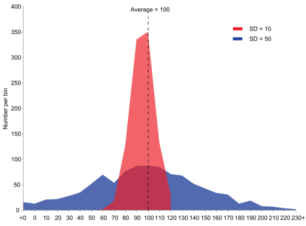{kind=link}
This is an example of two sample populations with the same mean and different standard deviations. The red population has mean 100 and SD 10; the blue population has mean 100 and SD 50.
5.4.3. Estimating the Accuracy of an Average
The standard error of the mean is the standard deviation of the sample mean's estimate of a population mean.
Learning Objective
Evaluate the accuracy of an average by finding the standard error of the mean.
Key Points
- Any measurement is subject to error by chance, which means that if the measurement was taken again it could possibly show a different value.
- In general terms, the standard error is the standard deviation of the sampling distribution of a statistic.
- The standard error of the mean is usually estimated by the sample estimate of the population standard deviation (sample standard deviation) divided by the square root of the sample size.
- The standard error and standard deviation of small samples tend to systematically underestimate the population standard error and deviations because the standard error of the mean is a biased estimator of the population standard error.
- The standard error is an estimate of how close the population mean will be to the sample mean, whereas standard deviation is the degree to which individuals within the sample differ from the sample mean.
Key Terms
- standard error
- A measure of how spread out data values are around the mean, defined as the square root of the variance.
- confidence interval
- A type of interval estimate of a population parameter used to indicate the reliability of an estimate.
- central limit theorem
- The theorem that states: If the sum of independent identically distributed random variables has a finite variance, then it will be (approximately) normally distributed.
Any measurement is subject to error by chance, meaning that if the measurement was taken again, it could possibly show a different value. We calculate the standard deviation in order to estimate the chance error for a single measurement. Taken further, we can calculate the chance error of the sample mean to estimate its accuracy in relation to the overall population mean.
Standard Error
In general terms, the standard error is the standard deviation of the sampling distribution of a statistic. The term may also be used to refer to an estimate of that standard deviation, derived from a particular sample used to compute the estimate. For example, the sample mean is the standard estimator of a population mean. However, different samples drawn from that same population would, in general, have different values of the sample mean.

For a value that is sampled with an unbiased normally distributed error, the graph depicts the proportion of samples that would fall between 0, 1, 2, and 3 standard deviations above and below the actual value.
The standard error of the mean (i.e., standard error of using the sample mean as a method of estimating the population mean) is the standard deviation of those sample means over all possible samples (of a given size) drawn from the population. Secondly, the standard error of the mean can refer to an estimate of that standard deviation, computed from the sample of data being analyzed at the time.
In practical applications, the true value of the standard deviation (of the error) is usually unknown. As a result, the term standard error is often used to refer to an estimate of this unknown quantity. In such cases, it is important to clarify one's calculations, and take proper account of the fact that the standard error is only an estimate.
Standard Error of the Mean
As mentioned, the standard error of the mean (SEM) is the standard deviation of the sample-mean's estimate of a population mean. It can also be viewed as the standard deviation of the error in the sample mean relative to the true mean, since the sample mean is an unbiased estimator. Generally, the SEM is the sample estimate of the population standard deviation (sample standard deviation) divided by the square root of the sample size:
Where s is the sample standard deviation (i.e., the sample-based estimate of the standard deviation of the population), and $n$ is the size (number of observations) of the sample. This estimate may be compared with the formula for the true standard deviation of the sample mean:
Where $\sigma$ is the standard deviation of the population. Note that the standard error and the standard deviation of small samples tend to systematically underestimate the population standard error and deviations because the standard error of the mean is a biased estimator of the population standard error. For example, with $n=2$ , the underestimate is about 25%, but for $n=6$ , the underestimate is only 5%. As a practical result, decreasing the uncertainty in a mean value estimate by a factor of two requires acquiring four times as many observations in the sample. Decreasing standard error by a factor of ten requires a hundred times as many observations.
Assumptions and Usage
If the data are assumed to be normally distributed, quantiles of the normal distribution and the sample mean and standard error can be used to calculate approximate confidence intervals for the mean. In particular, the standard error of a sample statistic (such as sample mean) is the estimated standard deviation of the error in the process by which it was generated. In other words, it is the standard deviation of the sampling distribution of the sample statistic.
Standard errors provide simple measures of uncertainty in a value and are often used for the following reasons:
- If the standard error of several individual quantities is known, then the standard error of some function of the quantities can be easily calculated in many cases.
- Where the probability distribution of the value is known, it can be used to calculate a good approximation to an exact confidence interval.
- Where the probability distribution is unknown, relationships of inequality can be used to calculate a conservative confidence interval.
- As the sample size tends to infinity, the central limit theorem guarantees that the sampling distribution of the mean is asymptotically normal.
5.4.4. Chance Models
A stochastic model is used to estimate probability distributions of potential outcomes by allowing for random variation in one or more inputs over time.
Learning Objective
Support the idea that stochastic modeling provides a better representation of real life by building randomness into a simulation.
Key Points
- Accurately determining the standard error of the mean depends on the presence of chance.
- Stochastic modeling builds volatility and variability (randomness) into a simulation and, therefore, provides a better representation of real life from more angles.
- Stochastic models help to assess the interactions between variables and are useful tools to numerically evaluate quantities.
Key Terms
- Monte Carlo simulation
- a broad class of computational algorithms that rely on repeated random sampling to obtain numerical results--i.e., by running simulations many times over in order to calculate those same probabilities
- stochastic
- random; randomly determined
The calculation of the standard error of the mean for repeated measurements is easily carried out on a data set; however, this method for determining error is only viable when the data varies as if drawing a name out of a hat. In other words, the data should be completely random, and should not show a trend or pattern over time. Therefore, accurately determining the standard error of the mean depends on the presence of chance.
Stochastic Modeling
"Stochastic" means being or having a random variable. A stochastic model is a tool for estimating probability distributions of potential outcomes by allowing for random variation in one or more inputs over time. The random variation is usually based on fluctuations observed in historical data for a selected period using standard time-series techniques. Distributions of potential outcomes are derived from a large number of simulations (stochastic projections) which reflect the random variation in the input(s).
In order to understand stochastic modeling, consider the example of an insurance company projecting potential claims. Like any other company, an insurer has to show that its assets exceed its liabilities to be solvent. In the insurance industry, however, assets and liabilities are not known entities. They depend on how many policies result in claims, inflation from now until the claim, investment returns during that period, and so on. So the valuation of an insurer involves a set of projections, looking at what is expected to happen, and thus coming up with the best estimate for assets and liabilities.
A stochastic model, in the case of the insurance company, would be to set up a projection model which looks at a single policy, an entire portfolio, or an entire company. But rather than setting investment returns according to their most likely estimate, for example, the model uses random variations to look at what investment conditions might be like. Based on a set of random outcomes, the experience of the policy/portfolio/company is projected, and the outcome is noted. This is done again with a new set of random variables. In fact, this process is repeated thousands of times.
At the end, a distribution of outcomes is available which shows not only the most likely estimate but what ranges are reasonable, too. The most likely estimate is given by the center of mass of the distribution curve (formally known as the probability density function), which is typically also the mode of the curve. Stochastic modeling builds volatility and variability (randomness) into a simulation and, therefore, provides a better representation of real life from more angles.
Numerical Evaluations of Quantities
Stochastic models help to assess the interactions between variables and are useful tools to numerically evaluate quantities, as they are usually implemented using Monte Carlo simulation techniques .

Monte Carlo simulation (10,000 points) of the distribution of the sample mean of a circular normal distribution for 3 measurements.
While there is an advantage here, in estimating quantities that would otherwise be difficult to obtain using analytical methods, a disadvantage is that such methods are limited by computing resources as well as simulation error. Below are some examples:
Means
Using statistical notation, it is a well-known result that the mean of a function, $f$ , of a random variable, $x$ , is not necessarily the function of the mean of $x$ . For example, in finance, applying the best estimate (defined as the mean) of investment returns to discount a set of cash flows will not necessarily give the same result as assessing the best estimate to the discounted cash flows. A stochastic model would be able to assess this latter quantity with simulations.
Percentiles
This idea is seen again when one considers percentiles. When assessing risks at specific percentiles, the factors that contribute to these levels are rarely at these percentiles themselves. Stochastic models can be simulated to assess the percentiles of the aggregated distributions.
Truncations and Censors
Truncating and censoring of data can also be estimated using stochastic models. For instance, applying a non-proportional reinsurance layer to the best estimate losses will not necessarily give us the best estimate of the losses after the reinsurance layer. In a simulated stochastic model, the simulated losses can be made to "pass through" the layer and the resulting losses are assessed appropriately.
5.4.5. The Gauss Model
The normal (Gaussian) distribution is a commonly used distribution that can be used to display the data in many real life scenarios.
Learning Objective
Explain the importance of the Gauss model in terms of the central limit theorem.
Key Points
- If $\mu = 0$ and $\sigma = 1$ , the distribution is called the standard normal distribution or the unit normal distribution, and a random variable with that distribution is a standard normal deviate.
- It is symmetric around the point $x=\mu$ , which is at the same time the mode, the median and the mean of the distribution.
- The Gaussian distribution is sometimes informally called the bell curve. However, there are many other distributions that are bell-shaped as well.
- About 68% of values drawn from a normal distribution are within one standard deviation σ away from the mean; about 95% of the values lie within two standard deviations; and about 99.7% are within three standard deviations. This fact is known as the 68-95-99.7 (empirical) rule, or the 3-sigma rule.
Key Term
- central limit theorem
- The theorem that states: If the sum of independent identically distributed random variables has a finite variance, then it will be (approximately) normally distributed.
The Normal (Gaussian) Distribution
In probability theory, the normal (or Gaussian) distribution is a continuous probability distribution, defined by the formula:
$\displaystyle f(x)= \frac{1}{\sigma \sqrt{2\pi }}e^\frac{{-(x-\mu )^{2}}}{2\sigma ^{2}}$
The parameter $\mu$ in this formula is the mean or expectation of the distribution (and also its median and mode). The parameter $\sigma$ is its standard deviation; its variance is therefore $\sigma^2$ . A random variable with a Gaussian distribution is said to be normally distributed and is called a normal deviate.
If $\mu = 0$ and $\sigma = 1$ , the distribution is called the standard normal distribution or the unit normal distribution, and a random variable with that distribution is a standard normal deviate.
Importance of the Normal Distribution
Normal distributions are extremely important in statistics, and are often used in the natural and social sciences for real-valued random variables whose distributions are not known. One reason for their popularity is the central limit theorem, which states that, under mild conditions, the mean of a large number of random variables independently drawn from the same distribution is distributed approximately normally, irrespective of the form of the original distribution. Thus, physical quantities that are expected to be the sum of many independent processes (such as measurement errors) often have a distribution very close to normal. Another reason is that a large number of results and methods (such as propagation of uncertainty and least squares parameter fitting) can be derived analytically, in explicit form, when the relevant variables are normally distributed.
The normal distribution is symmetric about its mean, and is non-zero over the entire real line. As such it may not be a suitable model for variables that are inherently positive or strongly skewed, such as the weight of a person or the price of a share. Such variables may be better described by other distributions, such as the log-normal distribution or the Pareto distribution.
The normal distribution is also practically zero once the value $x$ lies more than a few standard deviations away from the mean. Therefore, it may not be appropriate when one expects a significant fraction of outliers, values that lie many standard deviations away from the mean. Least-squares and other statistical inference methods which are optimal for normally distributed variables often become highly unreliable. In those cases, one assumes a more heavy-tailed distribution, and the appropriate robust statistical inference methods.
The Gaussian distribution is sometimes informally called the bell curve. However, there are many other distributions that are bell-shaped (such as Cauchy's, Student's, and logistic). The terms Gaussian function and Gaussian bell curve are also ambiguous since they sometimes refer to multiples of the normal distribution whose integral is not 1; that is, for arbitrary positive constants $a$ , $b$ and $c$ .
Properties of the Normal Distribution
The normal distribution $f(x)$ , with any mean $\mu$ and any positive deviation $\sigma$ , has the following properties:
- It is symmetric around the point $x = \mu$ , which is at the same time the mode, the median and the mean of the distribution.
- It is unimodal: its first derivative is positive for $x<\mu$ , negative for $x>\mu$ , and zero only at $x=\mu$ .
- It has two inflection points (where the second derivative of $f$ is zero), located one standard deviation away from the mean, namely at $x = \mu - \sigma$ and $x = \mu + \sigma$ .
- About 68% of values drawn from a normal distribution are within one standard deviation $\sigma$ away from the mean; about 95% of the values lie within two standard deviations; and about 99.7% are within three standard deviations. This fact is known as the 68-95-99.7 (empirical) rule, or the 3-sigma rule .
Notation
The normal distribution is also often denoted by $N(\mu, \sigma^2)$ . Thus when a random variable $x$ is distributed normally with mean $\mu$ and variance $\sigma^2$ , we write $X\sim N\left ( \mu ,\sigma ^{2} \right )$
5.4.6. Comparing Two Sample Averages
Student's t-test is used in order to compare two independent sample means.
Learning Objective
Contrast two sample means by standardizing their difference to find a t-score test statistic.
Key Points
- Very different sample means can occur by chance if there is great variation among the individual samples.
- In order to account for the variation, we take the difference of the sample means and divide by the standard error in order to standardize the difference, resulting in a t-score test statistic.
- The independent samples t-test is used when two separate sets of independent and identically distributed samples are obtained, one from each of the two populations being compared.
- Paired samples t-tests typically consist of a sample of matched pairs of similar units or one group of units that has been tested twice (a "repeated measures" t-test).
- An overlapping samples t-test is used when there are paired samples with data missing in one or the other samples.
Key Terms
- null hypothesis
- A hypothesis set up to be refuted in order to support an alternative hypothesis; presumed true until statistical evidence in the form of a hypothesis test indicates otherwise.
- Student's t-distribution
- A distribution that arises when the population standard deviation is unknown and has to be estimated from the data; originally derived by William Sealy Gosset (who wrote under the pseudonym "Student").
The comparison of two sample means is very common. The difference between the two samples depends on both the means and the standard deviations. Very different means can occur by chance if there is great variation among the individual samples. In order to account for the variation, we take the difference of the sample means,
$\bar { { X }_{ 1 } } -\bar { { X }_{ 2 } }$ ,
and divide by the standard error in order to standardize the difference. The result is a t-score test statistic.
t-Test for Two Means
Although the t-test will be explained in great detail later in this textbook, it is important for the reader to have a basic understanding of its function in regard to comparing two sample means. A t-test is any statistical hypothesis test in which the test statistic follows Student's t distribution, as shown in , if the null hypothesis is supported. It can be used to determine if two sets of data are significantly different from each other.
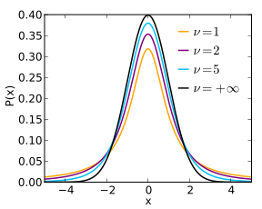{kind=link}
This is a plot of the Student t Distribution for various degrees of freedom.
In the t-test comparing the means of two independent samples, the following assumptions should be met:
- Each of the two populations being compared should follow a normal distribution.
- If using Student's original definition of the t-test, the two populations being compared should have the same variance. If the sample sizes in the two groups being compared are equal, Student's original t-test is highly robust to the presence of unequal variances.
- The data used to carry out the test should be sampled independently from the populations being compared. This is, in general, not testable from the data, but if the data are known to be dependently sampled (i.e., if they were sampled in clusters), then the classical t-tests discussed here may give misleading results.
Two-sample t-tests for a difference in mean involve independent samples, paired samples and overlapping samples. The independent samples t-test is used when two separate sets of independent and identically distributed samples are obtained, one from each of the two populations being compared. For example, suppose we are evaluating the effects of a medical treatment. We enroll 100 subjects into our study, then randomize 50 subjects to the treatment group and 50 subjects to the control group. In this case, we have two independent samples and would use the unpaired form of the t-test.
Paired sample t-tests typically consist of a sample of matched pairs of similar units or one group of units that has been tested twice (a "repeated measures" t-test). A typical example of the repeated measures t-test would be where subjects are tested prior to a treatment (say, for high blood pressure) and the same subjects are tested again after treatment with a blood-pressure lowering medication. By comparing the same patient's numbers before and after treatment, we are effectively using each patient as their own control.
An overlapping sample t-test is used when there are paired samples with data missing in one or the other samples. These tests are widely used in commercial survey research (e.g., by polling companies) and are available in many standard crosstab software packages.
5.4.7. Odds Ratios
The odds of an outcome is the ratio of the expected number of times the event will occur to the expected number of times the event will not occur.
Learning Objective
Define the odds ratio and demonstrate its computation.
Key Points
- The odds ratio is one way to quantify how strongly having or not having the property $A$ is associated with having or not having the property $B$ in a population.
- The odds ratio is a measure of effect size, describing the strength of association or non-independence between two binary data values.
- To compute the odds ratio, we 1) compute the odds that an individual in the population has $A$ given that he or she has $B$ , 2) compute the odds that an individual in the population has $A$ given that he or she does not have $B$ and 3) divide the first odds by the second odds.
- If the odds ratio is greater than one, then having $A$ is associated with having $B$ in the sense that having $B$ raises the odds of having $A$ .
Key Terms
- logarithm
- for a number
$x$ , the power to which a given base number must be raised in order to obtain$x$ - odds
- the ratio of the probabilities of an event happening to that of it not happening
The odds of an outcome is the ratio of the expected number of times the event will occur to the expected number of times the event will not occur. Put simply, the odds are the ratio of the probability of an event occurring to the probability of no event.
An odds ratio is the ratio of two odds. Imagine each individual in a population either does or does not have a property $A$ , and also either does or does not have a property $B$ . For example, $A$ might be "has high blood pressure," and $B$ might be "drinks more than one alcoholic drink a day." The odds ratio is one way to quantify how strongly having or not having the property $A$ is associated with having or not having the property $B$ in a population. In order to compute the odds ratio, one follows three steps:
- Compute the odds that an individual in the population has $A$ given that he or she has $B$ (probability of $A$ given $B$ divided by the probability of not-$A$ given $B$ ).
- Compute the odds that an individual in the population has $A$ given that he or she does not have $B$ .
- Divide the first odds by the second odds to obtain the odds ratio.
If the odds ratio is greater than one, then having $A$ is associated with having $B$ in the sense that having $B$ raises (relative to not having $B$ ) the odds of having $A$ . Note that this is not enough to establish that $B$ is a contributing cause of $A$ . It could be that the association is due to a third property, $C$ , which is a contributing cause of both $A$ and $B$ .
In more technical language, the odds ratio is a measure of effect size, describing the strength of association or non-independence between two binary data values. It is used as a descriptive statistic and plays an important role in logistic regression.
Example
Suppose that in a sample of $100$ men $90$ drank wine in the previous week, while in a sample of $100$ women only $20$ drank wine in the same period. The odds of a man drinking wine are $90$ to $10$ (or $9:1$ ) while the odds of a woman drinking wine are only $20$ to $80$ (or $1:4=0.25:1$ ). The odds ratio is thus $\frac{9}{0.25}$ (or $36$ ) showing that men are much more likely to drink wine than women. The detailed calculation is:
This example also shows how odds ratios are sometimes sensitive in stating relative positions. In this sample men are $\frac{90}{20} = 4.5$ times more likely to have drunk wine than women, but have $36$ times the odds. The logarithm of the odds ratio—the difference of the logits of the probabilities—tempers this effect and also makes the measure symmetric with respect to the ordering of groups. For example, using natural logarithms, an odds ratio of $\frac{36}{1}$ maps to $3.584$ , and an odds ratio of $\frac{1}{36}$ maps to $-3.584$ .
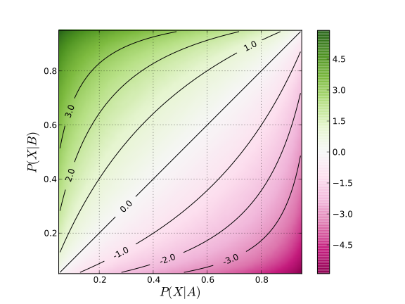{kind=link}
A graph showing how the log odds ratio relates to the underlying probabilities of the outcome $X$ occurring in two groups, denoted $A$ and $B$ . The log odds ratio shown here is based on the odds for the event occurring in group $B$ relative to the odds for the event occurring in group $A$ . Thus, when the probability of $X$ occurring in group $B$ is greater than the probability of $X$ occurring in group $A$ , the odds ratio is greater than $1$ , and the log odds ratio is greater than $0$ .
5.4.8. When Does the Z-Test Apply?
A $z$ -test is a test for which the distribution of the test statistic under the null hypothesis can be approximated by a normal distribution.
Learning Objective
Identify how sample size contributes to the appropriateness and accuracy of a
Key Points
- The term $z$ -test is often used to refer specifically to the one-sample location test comparing the mean of a set of measurements to a given constant.
- To calculate the standardized statistic $Z = \frac{X - \mu_0}{s}$ , we need to either know or have an approximate value for $\sigma^2$$z$ σ2, from which we can calculate $s^2 = \frac{\sigma^2}{n}$ .
- For a $z$ -test to be applicable, nuisance parameters should be known, or estimated with high accuracy.
- For a $z$ -test to be applicable, the test statistic should follow a normal distribution.
Key Terms
- null hypothesis
- A hypothesis set up to be refuted in order to support an alternative hypothesis; presumed true until statistical evidence in the form of a hypothesis test indicates otherwise.
- nuisance parameters
- any parameter that is not of immediate interest but which must be accounted for in the analysis of those parameters which are of interest; the classic example of a nuisance parameter is the variance
$\sigma^2$ , of a normal distribution, when the mean,$\mu$ , is of primary interest
$Z$ -test
A $Z$ -test is any statistical test for which the distribution of the test statistic under the null hypothesis can be approximated by a normal distribution. Because of the central limit theorem, many test statistics are approximately normally distributed for large samples. For each significance level, the $Z$ -test has a single critical value (for example, $1.96$ for 5% two tailed) which makes it more convenient than the Student's t-test which has separate critical values for each sample size. Therefore, many statistical tests can be conveniently performed as approximate $Z$ -tests if the sample size is large or the population variance known. If the population variance is unknown (and therefore has to be estimated from the sample itself) and the sample size is not large ($n<30$ ), the Student $t$ -test may be more appropriate.
If $T$ is a statistic that is approximately normally distributed under the null hypothesis, the next step in performing a $Z$ -test is to estimate the expected value $\theta$ of $T$ under the null hypothesis, and then obtain an estimate $s$ of the standard deviation of $T$ . We then calculate the standard score $Z = \frac{(T-\theta)}{s}$ , from which one-tailed and two-tailed $p$ -values can be calculated as $\varphi(-Z)$ (for upper-tailed tests), $\varphi(Z)$ (for lower-tailed tests) and $2\varphi(\left|-Z\right|)$ (for two-tailed tests) where $\varphi$ is the standard normal cumulative distribution function.
Use in Location Testing
The term $Z$ -test is often used to refer specifically to the one-sample location test comparing the mean of a set of measurements to a given constant. If the observed data $X_1, \cdots, X_n$ are uncorrelated, have a common mean $\mu$ , and have a common variance $\sigma^2$ , then the sample average $\bar{X}$ has mean $\mu$ and variance $\frac{\sigma^2}{n}$ . If our null hypothesis is that the mean value of the population is a given number $\mu_0$ , we can use $\bar{X} - \mu_0$ as a test-statistic, rejecting the null hypothesis if $\bar{X}-\mu_0$ is large.
To calculate the standardized statistic $Z = \frac{(X - _0)} {s}$ , we need to either know or have an approximate value for $\sigma^2$ , from which we can calculate $s^2 = \frac{\sigma^2}{n}$ . In some applications, $\sigma^2$ is known, but this is uncommon. If the sample size is moderate or large, we can substitute the sample variance for $\sigma^2$ , giving a plug-in test. The resulting test will not be an exact $Z$ -test since the uncertainty in the sample variance is not accounted for—however, it will be a good approximation unless the sample size is small. A $t$ -test can be used to account for the uncertainty in the sample variance when the sample size is small and the data are exactly normal. There is no universal constant at which the sample size is generally considered large enough to justify use of the plug-in test. Typical rules of thumb range from 20 to 50 samples. For larger sample sizes, the $t$ -test procedure gives almost identical $p$ -values as the $Z$ -test procedure. The following formula converts a random variable $X$ to the standard $Z$ :
Conditions
For the $Z$ -test to be applicable, certain conditions must be met:
- Nuisance parameters should be known, or estimated with high accuracy (an example of a nuisance parameter would be the standard deviation in a one-sample location test). $Z$ -tests focus on a single parameter, and treat all other unknown parameters as being fixed at their true values. In practice, due to Slutsky's theorem, "plugging in" consistent estimates of nuisance parameters can be justified. However if the sample size is not large enough for these estimates to be reasonably accurate, the $Z$ -test may not perform well.
- The test statistic should follow a normal distribution. Generally, one appeals to the central limit theorem to justify assuming that a test statistic varies normally. There is a great deal of statistical research on the question of when a test statistic varies approximately normally. If the variation of the test statistic is strongly non-normal, a $Z$ -test should not be used.